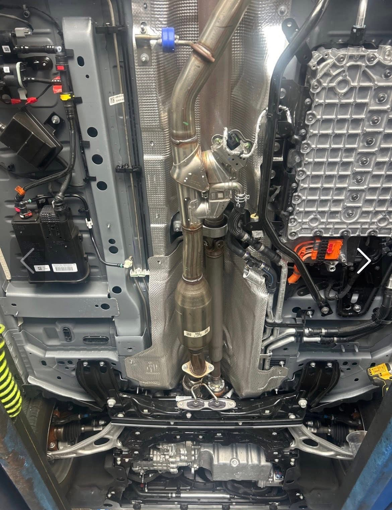
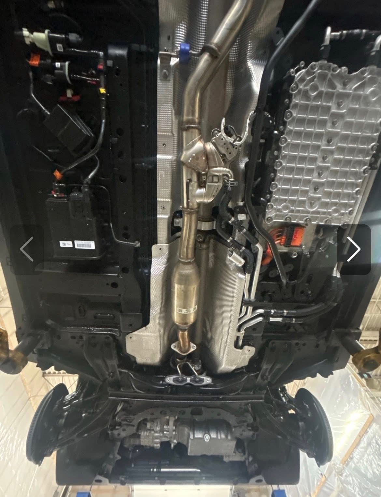
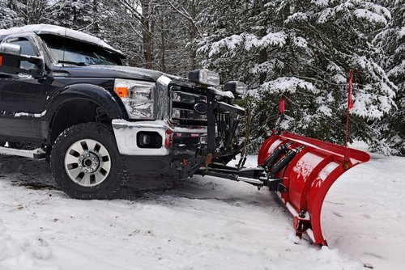
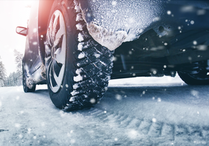
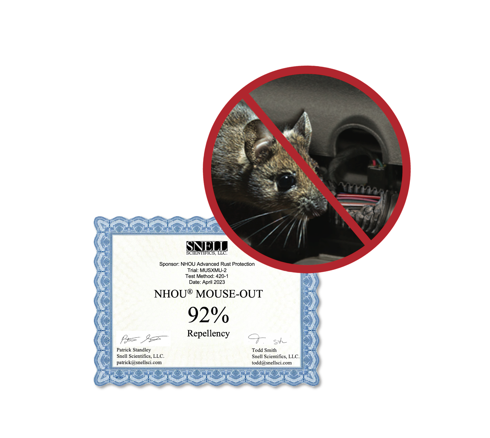
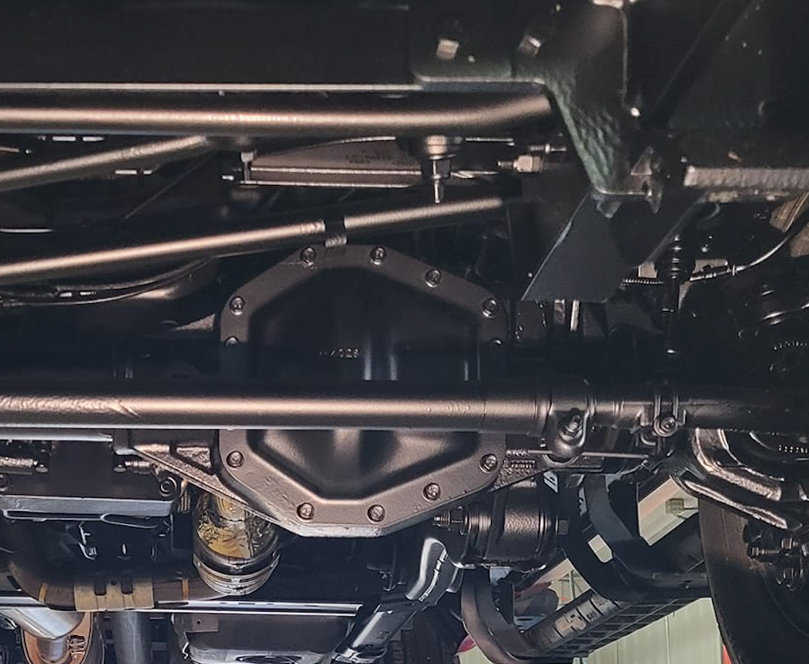

NHOU St. Croix Valley proudly serves the Wisconsin/Minnesota border from our dedicated shop location—or with our convenient mobile service from our specially fabricated undercoating trailer.
Before

After

Unlike paint-based undercoating which can crack, chip, and trap moisture against the frame, our proven oil-based undercoating self-heals while forcing out moisture, sealing off oxygen, and creeping deep into frame cavities. For vehicles with little to no rust, our hybrid formulation cures to a matte-black, drip-free, like-new finish within 48 hours and is backed by a lifetime warranty.


TRUCKS
Whether you own one truck or a fleet of snow removal equipment, NHOU St. Croix Valley can extend the life of your vehicles, while decreasing downtime and increasing reliability. NHOU oil undercoating has been proven on tens of thousands of trucks for over 15 years.
CARS & SUVS
Second to your home, your personal vehicles are the biggest investment you’re likely to make. Our eco-friendly, mineral-oil-based formula creeps into all the little places rust begins—like inside your frame and behind wheel wells. By sealing off oxygen and forcing out moisture, rust simply can’t happen.
MUNICIPAL & COMMERCIAL FLEETS
NHOU undercoating protects your fleet vehicles and equipment from corrosion and decay—whether at-use or in storage. For the ultimate protection during long-term storage, we can apply our #1-rated Mouse-Out formula that keeps rodents away—protecting your fleet from infestation AND rust.
NHOU Oil Undercoating vs Other Undercoating
| Feature | NHOU Oil Undercoating | Other Undercoatings |
|---|---|---|
| Formulation: | Modern, vehicle-specific formula, constantly improved | Outdated recipes not intended for vehichles that trap moisture and cause rust |
| Penetration: | Mists and creeps deeply into tight spaces. A dime-size drop creeps more than 7 inches | Does not creep or mist missing deep body cavities and frames |
| Equipment: | Custom-manufactured tools from the leading supplier to reach every single part | Generic, off-the-shelf tools that miss hidden areas |
| Rodent Defense: | Exclusive Mouse-Out formula repels mice and rodents four ways with 92% effectivness | None; leaves soy-coated wires vulnerable to chewing |

NHOU MOUSE-OUT
Today’s vehicles are manufactured with soy-based wiring and plastics that smell and taste sweet to rodents. That’s why every NHOU undercoating application includes NHOU MOUSE-OUT rodent repellent—laboratory formulated to repel rodents in four ways: scent, taste, touch and predatory fear from synthetic predator scent undetectable by humans.
MOUSE-OUT is infused directly into our clear formula that’s sprayed inside your vehicle’s frame, in all body cavities, and on all wiring under the hood. In third-party lab testing, the exclusive formula achieved an unprecedented 92% effectiveness at repelling mice.

NHOU Hybrid
NHOU HYBRID is our newest formula, achieving our highest-ever rating in our lab tests. Engineered for vehicles with little to no rust (typically vehicles up to three years old here in Northern Virginia), the oil-based rust protectant will creep and penetrate to the base metal to displace moisture and then cure within 48 hours to form a pliable, matte-black, drip-free layer—giving your undercarriage a like-new appearance while protecting it from road salt-brine and rust.
After NHOU HYBRID is applied to external undercarriage parts, NHOU Clear Oil Undercoating is then misted into all frame cavities, body panels and inside the engine bay. Infused with NHOU MOUSE-OUT, it deters rodents by touch, smell, taste and predatory fear-with real peppermint essential oil and predatory scent undetectable by humans.
NHOU HYBRID is backed by a lifetime, transferrable warranty.